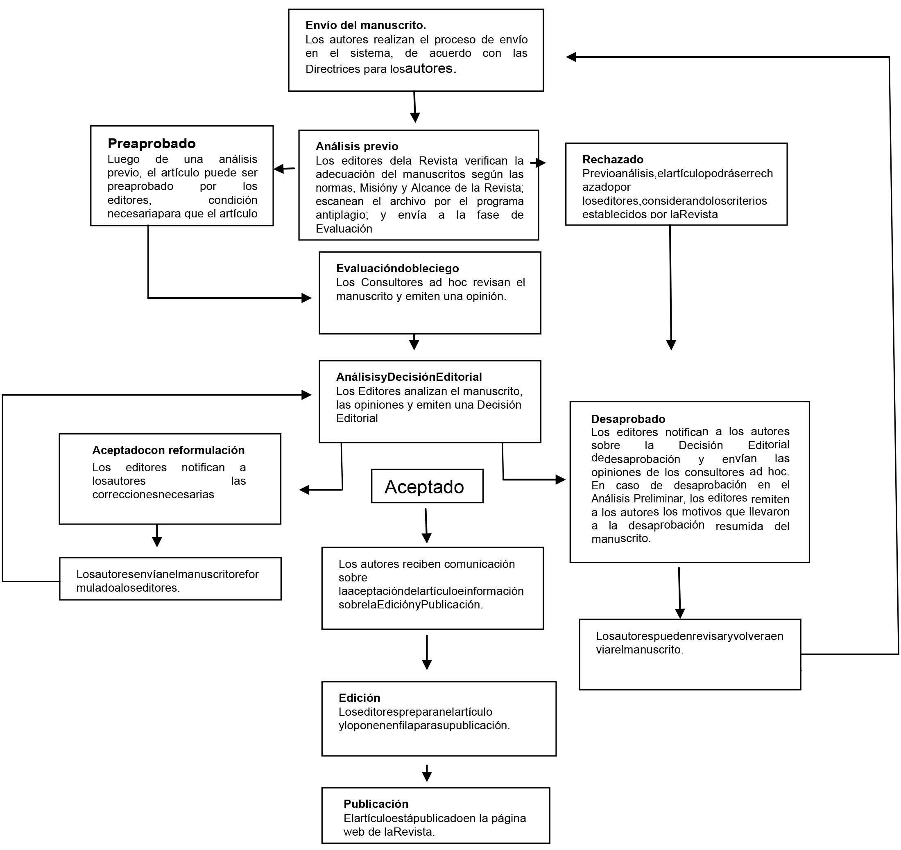

ISSN 2178-5198 versión impresa
ISSN 2178-5201 versión on-line
INSTRUCCIONES A LOS AUTORES
|
ISSN 2178-5198 versión impresa |
|
Como parte del proceso de envío, los autores deben verificar el cumplimiento del envío con todos los ítems enumerados a continuación. Los envíos que no cumplan con las normas serán devueltos a los autores.
|
Diagrama del flujo del proceso de envío, evaluación y publicación
 |
Instrucciones para los autores
1 - Registro El registro en el sistema y el posterior acceso, a través de usuario y contraseña, son obligatorios para la presentación de trabajos, así como para el seguimiento del proceso editorial en curso. Inicie sesión en una cuenta existente o Registre una nueva cuenta. 2 - Procedimientos y cuidados antes de la postulación
3 - Instrucciones para el envío de artículos
4 - Referencias bibliográficas
|
Para evitar conflictos de intereses y garantizar la imparcialidad durante todo el proceso de evaluación (ver. Diagrama de flujo ), la identidad de los revisores y los autores se mantienen confidenciales. Luego de la verificación por parte del equipo editorial de la adecuación del manuscrito de acuerdo con el enfoque y alcance de la Revista y el cumplimiento de las normas informadas en el sitio web, los artículos son evaluados, aplicando el proceso de doble ciego, es decir, son evaluados por dos jurados externos a la Revista. El manuscrito que recibe aceptación o rechazo es enviado a un tercer revisor, también anónimo y externo a la Revista. Los autores pueden seguir el proceso de evaluación de sus envíos en el SEER, utilizando un nombre de usuario y contraseña para acceder. En el entorno destinado a los autores, es posible acceder a las recomendaciones. Está disponible una lista de pautas para ser examinadas por los revisores, que incluyen los siguientes aspectos: originalidad del artículo; pertinencia de la discusión, de los datos informados, de la interpretación, de la metodología y de las referencias citadas; claridad y coherencia del título, resumen, palabras clave, introducción, desarrollo y conclusión. La aceptación del artículo puede ser total o condicionada a reformulaciones y correcciones propuestas por los evaluadores y editores. Las modificaciones de estructura y contenido sugeridas durante el proceso de evaluación sólo se realizarán con el acuerdo de los autores. Estas orientaciones se siguen tanto en la evaluación de artículos enviados en flujo continuo, como en la evaluación de artículos enviados a convocatorias temáticas. Solicitudes de cambios y reformulaciones Artículos aprobados La aceptación del manuscrito no garantiza su publicación inmediata. Una vez aprobada, su publicación respetará los criterios de fecha de envío y ubicación geográfica de las instituciones de los autores. Para evitar la endogenia y garantizar la diversidad de los autores de los artículos publicados, sólo después de un intervalo de dos años, esta revista publicará otro artículo del mismo autor. |
Directrices para los evaluadores
¿El tema tratado en el artículo es relevante para ser publicado por la revista? * ¿El artículo es original? * ¿El título refleja clara y suficientemente el contenido del artículo? * ¿Son satisfactorias la presentación, organización y extensión del artículo? * ¿La introducción realiza una revisióndel tema abordado y deja claro el objetivo del trabajo? * ¿Es la discusión relevante y suficiente? * ¿Los datos justifican las interpretaciones? * ¿Es necesario añadir algún elemento que pueda enriquecer el artículo? * ¿Es necesario reducir o eliminar alguna parte del artículo? * ¿Las ilustraciones y tablasson necesarias y pertinentes? * ¿Las figuras son ilustrativas y de buena calidad para su reproducción? * ¿Las palabras clave son adecuadas para el artículo? * ¿El resumen da buena información sobre el trabajo? * ¿Las referencias son adecuadas y necesarias? * ¿Las referencias están escritas de acuerdo con las normas de la revista? * ¿Los autores citados en el texto están en las referencias? * ¿Se hicieron recomendaciones en el manuscrito? * ¿La investigación incluye entrevistas o estudios de casos? Verifique si los autores informaron el número de protocolo de aprobación del Comité de Ética (Plataforma Brasil) *. Opinión sobre la publicación del artículo, entre: Notas (si es necesario): |
Política de privacidad Los nombres y direcciones informados a esta revista serán utilizados exclusivamente para los servicios prestados de publicación, no estando disponibles para otros fines ni para terceros. |
[Home] [Sobre la revista] [Cuerpo editorial] [Subscripción]
 Todo el contenido de la revista, excepto dónde está identificado, está
bajo una Licencia
Creative Commons
Todo el contenido de la revista, excepto dónde está identificado, está
bajo una Licencia
Creative Commons
Editora da Universidade Estadual de Maringá
Av. Colombo, 5790, Bloco 40
87020-900 Maringá, Paraná, Brasil
Telefone: +55 44 3011-4253